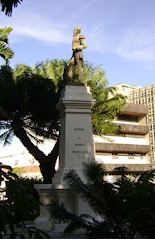

-
Monumento do Centenário
Monumento do centenário ao Cristo redentor
35 metros de altura
-
José de Alencar
A estátua do escritor está na praça de mesmo nome
Inaugurada em 1929
-
General Tiburcio
Essa foi a primeira estátua de fortaleza
Inaugurada em 1888